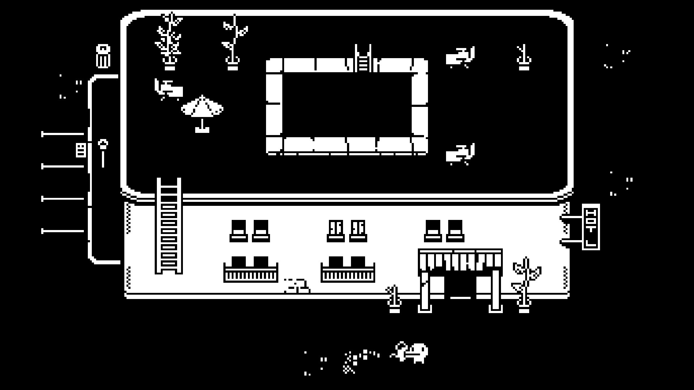
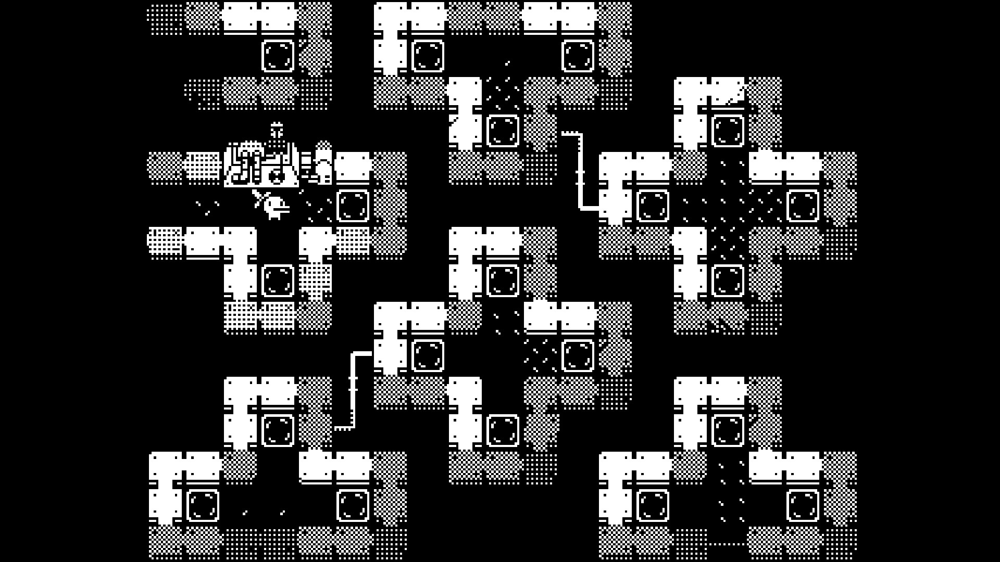
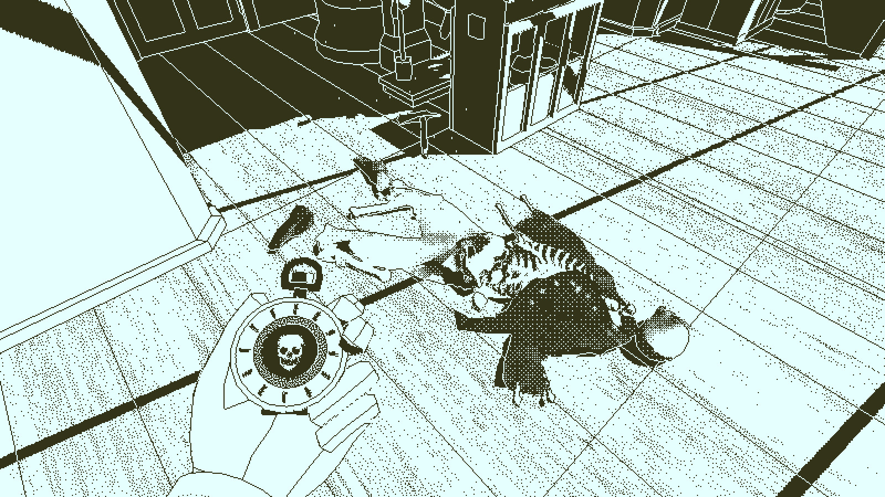
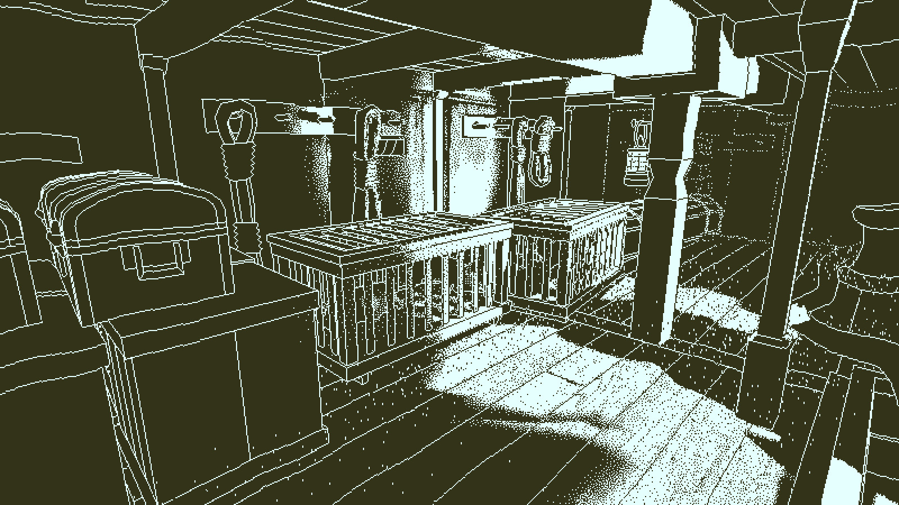
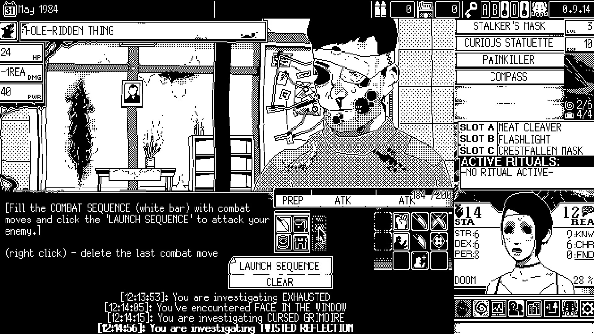
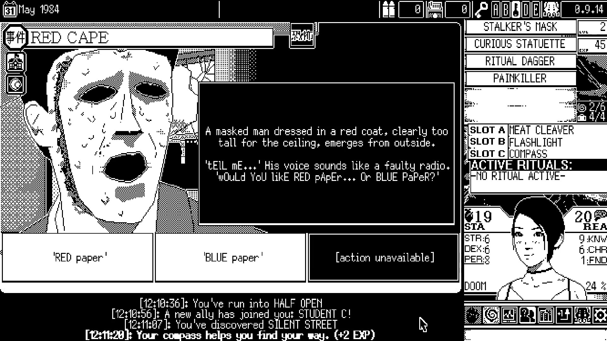

FIELD NOTES / ISSUE 004
黑白不是滤镜：三种极限限色语言
本期目录 展开章节
第004期 · 风格标签：黑白限色 / 图形语言 / 2D与3D。六张真实官方商店画面已经逐张查看；事实附来源，审美判断与练习规格明确区分。本期不把AI示意图当作游戏截图。
只有两种颜色，为什么有三种气质？
Minit的粗黑白像贴在地图上的符号；Return of the Obra Dinn把可绕行的三维船舱压成旧显示器式明暗；WORLD OF HORROR则让漫画网点与窗口信息挤在一起。它们共享的是用有限明暗承担原本由色相承担的区分，并不是同一种游戏类型，也不是同一种资产管线。俯视、第一人称和窗口式布局是镜头/界面选择；冒险、推理和回合制恐怖才是玩法类别。
严格1-bit指像素只取两个输出值；“1-bit风格”可以容纳不同色对、显示软化和截图压缩。两色不一定是纯黑纯白，网点也不是灰色颜料：它用黑白点的密度制造中间明度感。下面不拿商店JPEG测出多种颜色便否认风格，也不把视觉近似当成渲染技术证明。
与第002期TOEM的黑白小世界相比，本期关注更严格的黑白面积、纹理频率与信息预算；与第003期纸艺的层片、透光不同，这次先问轮廓和留白能否直接说明玩法。历史现有四期，不足七期，本期不虚构周回顾。三作都偏独立制作，但“小团队”不代表低成本：3D调查场景和密集事件插画仍有很高的组织工作量。
本期练习调色板：双色核心，四阶只作分支
这是原创渡口的教学色板，不是三款原作精确取色。严格双色只用前两项，另外两项只用于另存的四灰阶试验。网点使用黑白点制造视觉层次，不添加灰色像素。
#141414轮廓、水面与暗部；严格双色分支
#F4F1E8通路、人物亮形与留白；严格双色分支
#555555仅四阶试验分支；双色成品禁用
#AAA79F仅四阶试验分支；双色成品禁用
01 · Minit：把读图时间还给一分钟


事实与定位。 官方把它定义为每次只玩六十秒的小冒险；设计师Kitty Calis解释，诅咒剑让玩家从家出发后一分钟死亡，取得的物品及能力保留，还能发现其他起点。这里应分开说“黑白粗像素语言”和“二维俯视冒险”，不要把黑白直接等同于恐怖或RPG。前者压缩视觉词汇，后者决定玩家如何辨路与接触对象。官方商店；设计师讲解
图像分析。 旅馆图（minit-03）亮像素约20%，大片黑并不意味着“夜晚”：它既是外围留白，也是屋顶平面；白色立面则用黑窗和黑门切出结构。屋顶粗白外框先建立整块区域，梯子、中央天井、盆栽再提供局部锚点。小角色的长嘴、短腿与所持物形成不同方向的短轮廓，不靠颜色身份。情绪因此偏古怪、轻巧、玩具式，而非写实阴沉。迷宫图（minit-06）把实白墙、棋盘网点墙与稀疏地面碎点区分开：密度成为材质和边界词汇，黑色通路连成可追踪路线。不是“细节越少越好”，而是装饰密度必须低于路口与对象的辨识优先级。
空间、UI与动态。 旅馆同时画出屋顶和立面，是服务阅读的俯视／正面混合表达，不应硬称等距3D。梯子与入口把不同高度串成可理解的行动关系。所选商店截图未显示计时HUD，不能据此声称游戏没有HUD；倒计时机制来自设计师文本。官方Gameplay Trailer可作动态补充，本次只查看了每十秒抽帧的联系表，能核对场景及强烈白形转场，不能据此评价动画帧数、打击节奏或输入手感。限时机制使“马上认出路、对象、出口”比材质可信度重要，明快轮廓让反复出发不必每次重新解释空间。
可借鉴及代价。 ①先用两色大形测试关卡，再给非关键墙面加一种网点；代价是场景差异要靠轮廓、排列和地标承担。②角色用不对称轮廓表达朝向，别只把彩色角色转灰；代价是小尺寸饰物很快粘连。③把路线与可交互物周围留干净，让一屏服务一次决策；代价是可放置的信息量减少，隐藏物与装饰物需额外验证可辨性。最值得借的是“读图预算”，不是照抄鸭嘴主角。
动态参考：官方商店视频入口。仅抽样静帧核对，不代替完整动态体验。
02 · Return of the Obra Dinn：两色画面，三维证据


事实与技术边界。 官方定义为基于探索与逻辑推理的第一人称悬疑冒险，死亡与暴力呈现在冻结的3D场景中。Lucas Pope说明，内部先渲染8-bit灰度，再用抖动转为二值；其开发日志区分DIGITAL的1-bit输出与ANALOG的柔化输出。因此“1-bit风格”不能被写成“所有模式、所有截图严格只有两个RGB值”。2019本人文章进一步强调几何轮廓、谨慎抖动和800×450场景渲染，而不是简单套一层黑白滤镜。官方商店；开发日志；作者文章
图像分析。 怀表图（obra-dinn-02）的主调实际是浅青与深橄榄，不是纯黑白。亮像素约71%，明亮甲板让尸体的深色衣块、肋骨及工具成为局部重心；左下前景手与圆怀表建立“我在检查”的身体关系，地板斜线把视线带向中部证据。货舱图（obra-dinn-04）亮像素只有约20%，同样两色却获得更闭塞的空间情绪。大箱、立柱和木笼先靠细亮轮廓分离，局部白色光斑再把路径从暗部提出来。两图的关键不是保持统一黑白比例，而是让每场景的证据和结构在各自的明暗组织中站稳。
材质、空间与动态。 点阵让平面出现粗糙、受光与体积印象；连续轮廓则回答“物体在哪里结束”。货舱的箱笼重叠、地板透视、柱子遮挡共同建立可走入的三维空间，不能因像素输出便把它称为二维像素场景。怀表以及另取的书页界面把操作包装为调查工具，减少与年代氛围不合的漂浮仪表。官方Announcement视频存在；本次仅看每十秒抽帧联系表，核对到甲板、冻结人物与名册，不冒充完整播放体验。动态舒适度结论来自作者：他专门处理镜头运动时抖动点游移与闪烁。视觉在这里服务“停下、转头、比对证据”，不是用暗处遮掉玩家必须看清的线索。
可借鉴及代价。 ①先保护轮廓，再分配抖动，不把所有表面等量铺噪点；代价是远景线条会拥挤。②按证据调整大明暗区，不死守一张黑白比例模板；代价是每场景要做可读性检查。③把文书与工具作为UI语言；代价是字形、放大方式和多语种排版都需测试。复制一帧容易，保持转头时的纹理稳定、长时观看舒适与线索公平才是昂贵部分。
动态参考：官方商店视频入口。仅抽样静帧核对，不代替完整动态体验。
03 · WORLD OF HORROR：让漫画恐惧进入操作界面


事实与定位。 官方称其为1-bit美术的宇宙恐怖RPG，采用回合制战斗、残酷选择和随机事件，并说明图像在MS Paint绘制；官网提到可选调色板。这里的“1-bit”描述图像语言，不等于“只能用纯黑白”，更不自动决定镜头。相较Minit的持续移动，它把行动组织为事件阅读、选项与战斗序列。官方商店；官方网站
图像分析。 战斗图（world-of-horror-01）亮像素约49%，但不是平均分散：上半部怪物与室内图像密集，下半部黑底说明区较整，右侧又被物品、装备、数值和人物头像分割。怪物脸上的纯黑空洞比周围网点更强，先抓住视线；界面随后把注意力拉到行动白条、图标及LAUNCH SEQUENCE按钮。恐怖图像不是独立插画，而与玩家必须计算和点击的区域共处。RED CAPE事件图（world-of-horror-02）亮像素约43%，左侧大脸的黑眼洞、黑嘴与苍白面孔建立压迫；中部大黑框提供文字缓冲，下方白色选项形成下一步阅读落点。
轮廓、材质与交互。 脸部少量实线保住五官，网点密度表示阴影与皮肤不适感；不是均匀铺满同一种“复古噪点”。面部近景与房间透视给出图像空间，但玩家主要在窗口、选项和资源面板中行动，不能把宣传片里的空间镜头当作主游戏自由走动方式。事件问红纸还是蓝纸，画面仍以文字标出RED／BLUE：色彩信息被转移到语言，形成一个可以直接学习的限色设计例子。战斗图可读到“先填入动作，再启动序列”的提示，因此画面稠密也承担规则说明和资源管理。官方v1.0 Launch Trailer为宣传动画来源，本次只抽帧查看，不用其中动画镜头证明游戏UI动态或实际战斗节奏。
可借鉴及代价。 ①把情绪画面、解释文本、操作按钮做密度分区，让最可怕的脸与最重要的按钮不争同一层级；代价是大量边框仍可能造成认知负担。②用纯黑洞口对比网点皮肤，先设计不安形体再贴材质；代价是小尺寸下网点会糊合、摩尔纹或丢细节。③颜色不足时让形状、位置、文字共同编码状态，而非只换一套调色板；代价是翻译后字宽、字号与按钮容量都必须重新检查。它可借的是“恐怖漫画与决策表格的协调”，不是越拥挤越复古。
动态参考：官方商店视频入口。仅抽样静帧核对，不代替完整动态体验。
横向比较：减少颜色，不等于减少判断
| 案例 | 配色/造型 | 密度与镜头 | 情绪/玩法 | 复杂度与代价 |
|---|---|---|---|---|
| Minit | 近黑白大块；短小符号轮廓 | 低至中；固定俯视房间 | 轻巧中带急迫；短循环探索 | 单件低，地图与状态辨识中；一像素都影响识别 |
| Obra Dinn | 两色视觉、轮廓与抖动；真实空间比例 | 中高；3D第一人称 | 疏离、停滞；现场观察推理 | 高；建模、光照、身份线索及动态采样要一起解决 |
| WORLD OF HORROR | 漫画轮廓、网点、局部重黑 | 高；窗口化事件和UI | 压迫、不安；阅读与回合决策 | 单场景中，内容规模高；文本本地化与屏幕密度吃预算 |
共同规则是：先分大黑白面，再让主角、入口和信息框有自己的空白边界；用形状、位置和节奏而不是色相传达状态。可以变化的是黑白比例、色对冷暖、网点密度、角色写实程度和镜头。不可随意变化的是同一系统中“什么密度代表背景、什么形状代表可操作”的约定。如果每张图都换一套约定，统一色板也救不回可读性。
个人开发优先从一屏2D探索、少量按钮的事件卡或单房间推理开始。战斗需要比静态截图更强的角色分离和命中反馈；经营要处理大量同屏物件，必须先建立尺寸/轮廓分类。第一人称3D两色化可以减少材质配色决策，却不会免除建模、布局、动画和舒适度测试。
原创风格规格卡：黑白渡口
- 视角与比例：2D固定俯视，320×180逻辑画布；人物12×16，图块16×16，物件高度按同一尺度递增。只是一组便于练习的起始规格。
- 形状：环境用矩形/缓圆角，主角与铃保留独特顶部轮廓；关键交互周围至少2逻辑像素留白，不使用原作标志性角色。
- 配色与光照：双色分支只用墨黑、纸白；暗面统一朝左下。强调不靠新增颜色，而靠轮廓反转、位置或局部留白；四阶分支另存，不与双色混叫。
- 密度与统一：远处大面、近处少量纹理；一屏最多一片较密网点，正文和按钮底不加纹理。所有素材同网格、同线宽、同脚底基线。
- 交互：铃有未敲/已敲两状态，声音之外还有静态视觉差别；船可进入时显示清楚提示，避免只靠一瞬闪光。
把黑白规则变成可用素材：Godot + DSH 实操
目标：一屏可走、可读的原创夜间渡口
本期不复刻三款游戏的角色或UI。做一个320×180逻辑画布的俯视渡口：主角从左侧走向右侧铃铛，敲铃后小船变为可进入。基础资产为人物、栈桥、石岸、铃铛、船和两枚按钮。最终只用墨黑#141414与纸白#F4F1E8；四阶草稿可临时加#555555、#AAA79F，但交付的严格双色分支必须移除两种中间色。以上尺寸、色值、流程均为教学建议，并非原作参数。以下是制作教程，尚未在你的Godot项目实际运行，不把计划清单冒充已经生成的游戏资产。
只用三类工具，各自承担有限的一步
ChatGPT Images官方说明支持生成、上传图后编辑和透明背景需求；适合先探索黑白面积、轮廓与场景概念。不要依靠提示词保证像素对齐、角色每帧一致或真正只有两种颜色。Krita官方手册提供像素网格和环绕平铺查看，用于人工描边、清理Alpha和查接缝。Godot CanvasItem可设置Nearest纹理过滤；用引擎验证缩放、碰撞、按钮和动画，不由生成图片代替。
DSH在这里仅指你现有的开发工作流：用它记录资产规格、任务与修改要求，协助整理导入或交互代码；未核实其具体产品和接口，不承诺自动接通图片工具或Godot。所有AI写出的脚本都先在测试场景查看错误，再并入主项目。工具能力检索于2026-10-23，北京时间；没有推荐未经验证的“一键成套游戏”服务。
| 环节 | 适用程度 | 必须人工做的部分 |
|---|---|---|
| 风格探索 | 高：快速比较面积和轮廓 | 选择唯一母版，排除无关装饰 |
| 角色/场景概念 | 中高：讨论造型很有用 | 统一比例、视角、接地点与黑白分配 |
| UI图标 | 中：适合候选形状 | 小尺寸重画、状态一致、文字交给真实字体 |
| 直接用资产 | 低到中：只对验收合格的单件成立 | 二值化、像素团、透明边、图块与引擎尺寸 |
| 动画/特效 | 低：可用作动作草稿 | 轮廓锁定、帧间衔接、关键帧与交互反馈 |
六步流程：先可读，再扩展
- 0–5分钟，做灰盒而不是生成整幅成品。在纸上或Godot里用矩形确定岸、桥、铃与出生点。主路宽24逻辑像素，角色暂用12×16矩形；这些是起点，不是定律。缩小看时，桥的可走范围不能与黑水混在一起。先手绘一个俯视角说明，禁止AI在扩展中改成等距视角。
- 5–12分钟，生成三张构图草案，只选一张。分别比较大白地配黑物件、黑底配白通路、对称黑白切分。把三图缩为320×180检查，选择能用一句话描述路径的一张。不要用“细节更多”打分。锁定母版后，记录黑色约六成、白色约四成的面积目标；可在局部调节，不能为了比例毁掉可走区。
- 12–22分钟，按资产拆开整理。以母版生成单件铃、船、人物候选，先整理到相同网格再导出。人物各方向保持头宽、肩宽、鞋底基线；先做一个方向的站立与两帧行走，再扩展，不一次要求十六动作。背景补全拆走物件后留下的空洞。透明PNG不是画着棋盘格的图片，必须在黑白两底上检查。
- 22–30分钟，像素清稿与平铺。用硬边笔刷删除孤立噪点，把线宽统一为1或2逻辑像素；物件边缘不允许半透明抗锯齿偷偷变成灰色。大石块只留一处亮切面，不用满屏网点证明材质。做一块16×16岸纹，环绕平铺检查左右和上下接缝；有重复斑点时改大色团，不靠模糊消缝。
- 30–40分钟，进入Godot试交互。先导入PNG，以Nearest过滤显示2D素材，保持整数倍演示缩放，另测目标手机窗口。背景、角色、前景各自分层；碰撞只包住实际障碍，不照着整张透明画布生成。铃铛用Area2D触发区，站近后显示独立文字提示；敲铃切换轮廓或留白，不只闪一下。记录角色脚底与桥边的遮挡顺序。
- 40–45分钟，录一个短回路并回看。走近、敲铃、上船、返回，逐帧看人物是否跳位、铃是否看得见、船是否遮掉角色。两帧动画节奏可暂用均匀间隔，感觉不自然再调整时序，不让AI重画所有帧。把通过与待修分开登记，保存母版、提示词、分层文件、资源尺寸和运行截图；只有实际跑过的检查才标“通过”。
四条可修改提示词：描述视觉规则，不借用作者名
方括号内容可替换；提示词不是保证书。生成结果要经过上述清稿和引擎验收。
1 · 母版探索
设计原创[夜间渡口]游戏场景概念，固定2D俯视，不是等距；横向16:9构图，左侧入口、中央窄栈桥、右侧单个铃铛与小船，保留明确可走空白。粗像素团、矩形和圆角剪影，墨黑#141414与纸白#F4F1E8两色，黑约60%，白约40%，不用渐变、灰色、写实纹理。远景少细节，交互铃铛周围留两圈空白。用于320×180逻辑画布的构图参考，非最终可用图块；不要文字、现有游戏角色或商标。
2 · 单件资产候选
沿用已选母版的俯视角、像素尺度和双色规则，绘制一个原创[渡口铃铛]，目标整理尺寸16×24逻辑像素；底座居中、接地点在画布下方，轮廓在黑底和白底均可辨。只用#141414、#F4F1E8，无灰色、无渐变；透明背景，不画棋盘格，不要场景、文字、投影或重复物件。提供单个完整物件，留出透明安全边。输出仅为待人工清稿候选。
3 · 局部修正
只修改选区内[铃铛右侧与岸边粘连]：在外轮廓和背景之间加入2逻辑像素的纸白#F4F1E8留白，保留墨黑#141414主体、原尺寸、位置、接地点和其余构图。禁止增添第三色、改镜头、重排道路或重新设计人物。若选区外发生改变，该结果不作为合格资产。
4 · 系列扩展
以已人工验收的[角色正面站立]为唯一比例参考，制作[背面站立]候选；保持12×16逻辑画布、头宽6像素、同一脚底基线、衣摆宽度和双色分配，保留识别用的[偏左背包]，不可随视角随机换边。墨黑#141414与纸白#F4F1E8；透明背景，无文字。此后一次仅生成一个动作；动画需人工逐帧对齐与循环测试，不要求本次自动交付完整动画表。
三条转译路线，不要把三个案例混成一种滤镜
从Minit借大块关系：AI先出剪影候选，人工删细节并对齐像素团，再放入2D碰撞场景。最适合这个渡口练习；难点不是黑白转换，而是正反底上的人物都读得清。禁止把原作角色直接截取进项目。
从Obra Dinn借结构光影：先用几何灰盒搭舱室，固定一盏主光，测试3D透视和遮挡，再试两色阈值或抖动后处理；人物仍需真实模型、绑定和动画。AI图可沟通灯光与服装，不能替代可绕行的模型。对个人项目，先做一间无角色舱室，接受缩小规模而非许诺整船自动生成。
从WORLD OF HORROR借图文分区：AI产出原创怪异物件的黑白概念，人工裁成事件画幅，文字和按钮在Godot独立排版。先锁定一张卡的标题、插画和两个选项，证明390像素宽还能读；网点不进入正文背景。代价是每张事件图都要控制密度，不是把所有图片转换黑白便统一。
资产清单与扩展边界
计划文件：master.kra（分层母版）；shore_tile.png（16×16，可平铺）；pier.png（静态桥面）；bell_idle.png与bell_rung.png（16×24，同原点）；boat.png（32×32）；hero_idle.png与hero_walk.png（12×16帧格）；ui_ring.png与ui_board.png（各16×16）；dock_test.tscn（测试场景）。这些是你练习要制作的文件，不是本期已交付文件。清单增加视角、帧数、原点、透明度、碰撞说明和验收状态列。扩展新关卡前先复用通过的岸纹与铃，避免每次生成一套新的像素尺度。
遇到这些失败，下一步改什么
- 画面像黑白照片而非图形：先把渐变分成大块，再删掉细碎纹理；别在全屏强加网点。抖动是表达层次的工具，不是万能风格按钮。
- 角色换动作就换脸或换背包：回到唯一母版，叠帧检查头和脚基线；必要时手工移动肢体，不继续随机重抽整套角色。
- 透明边缘发灰、缩放变糊：检查Alpha与过滤方式；在逻辑尺寸修边，别只在放大预览里看。JPEG不适合透明精灵，改用PNG并检查实际导入结果。
- 船和背景粘连：先留白隔开并改变轮廓方向；不要靠新增红色救场，否则已经改变双色规格。若确需强调色，要登记为新的限色分支。
- 移动中网点闪烁：减少网点覆盖，检查采样与屏幕/物体空间选择；静帧漂亮不代表动态通过。对初学者，先保留稳定色块路线。
五条验收：适用于45分钟练习
- 最终严格双色分支的非透明像素只来自两色；400%查看没有随机半透明灰边，四阶草稿单独标记。
- 在320×180逻辑尺寸与手机窗口中，三秒内能指出主角、通路和铃；小字由真实字体排版，不是生成图片上的伪文字。
- 人物各帧同画布、同脚底、同身份特征；循环不跳位，两个铃状态保持同原点且区别明确。
- 岸纹以3×3平铺无明显边缝；所有透明物件在黑白底都无残留棋盘格，桥边与水面的碰撞符合画面。
- 实际完成走近—敲铃—上船回路，触发区域可理解；保存测试截图与待修项，没运行就注明未验证。
同一研究的小红书图文包
图文包已生成，尚未发布。包含3个候选标题、约800字文案、封面与6页1080×1440图卡、可编辑排版源及来源清单。七页均为原创文字与几何图解，明确标注非实机；没有把未获再使用许可的游戏截图放入公开外发包。
下载第004期小红书完整图文包 ZIP · 复制文案 · 七页预览

本次仅归档，没有登录小红书、上传草稿或发布。以后启用发布仍须先验证指定账号和发布连接，并明确更新任务。
来源与图片归档
检索与图片核对日期：2026-10-23，北京时间；具体检索/下载时间及SHA-256见本期清单。官方商店提供的游戏画面用于有针对性的作品评论，版权归原开发者/发行商，不代表许可你将它们用作游戏素材或再发行图集。本次原图可正常读取，未使用网页截图替代。官方视频已抽样静帧核对，未完整播放及逐帧评估，不据静图声称帧率或动画时长。